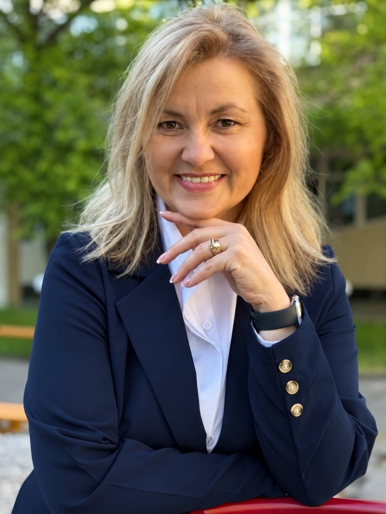

Член на екипа
Гл. ас. д-р Виолета Тончева-Златкова
Главен асистент
Университет за национално и световно стопанство
Катедра „Публична администрация“
Катедра „Публична администрация“
Преподавател и изследовател с научни интереси в областта на публичната администрация, социалната отговорност, доброволчеството и дигиталната трансформация на обществени системи.
Участие в проекта:
разработване и анализ
на емпиричното изследване
на дигитализацията в образованието,
изследване на регионалните различия
и дигиталните пропуски,
както и анализ
на дигиталната трансформация
в гражданския сектор,
доброволчеството
и използването на дигитални инструменти
за обществено участие.